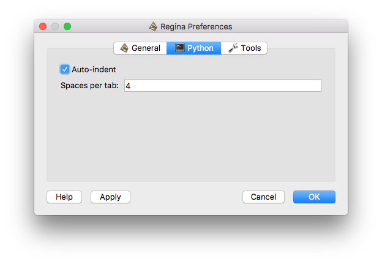

Python Options | |
| Prev | Configuration | Next |
The Python options panel controls the behaviour of Python consoles, and allows you to manage your active Python libraries.

The settings here are:
- Auto-indent
If checked, Regina will automatically indent each new command in a Python console with spaces to match the previous line. You can of course add more spaces or remove them using backspace before you type your command.
- Spaces per tab
Controls the number of spaces that are inserted into the command box when you press Tab.
- Python libraries
Python libraries are files containing code that is run automatically at the beginning of every Python session (each time you open a graphical console, run a script packet, or start regina-python from the command line). A typical Python library defines one or more useful functions.
The idea of Python libraries is that you can save your own frequently-used code in a file, and then add this file to the list of libraries here in the Python options panel.
When you no longer wish to use a library, you can remove it from the list or you can just deactivate it. Deactivating means the code will not be run automatically, but the file will remain here in the list so that you can easily activate it again. Active libraries are marked with a tick, and deactivated libraries are marked with a no-entry sign (as seen in the illustration above).
Regina ships with some example Python libraries. These are usually installed in
/usr/share/regina/pylib/, though this may differ with your GNU/Linux distribution.Tip
On GNU/Linux and MacOS X, the list of Python libraries is stored in the file
~/.regina-libs. This is a plain text file, with each library filename written on a separate line. Regina will ignore any blank lines or lines beginning with a hash (#). You are welcome to edit this file directly if you prefer.On Windows this list is stored in the registry, and you should only edit it through the Python configuration panel as described above.
| Prev | Contents | Next |
| Configuration | Up | Tools Options |